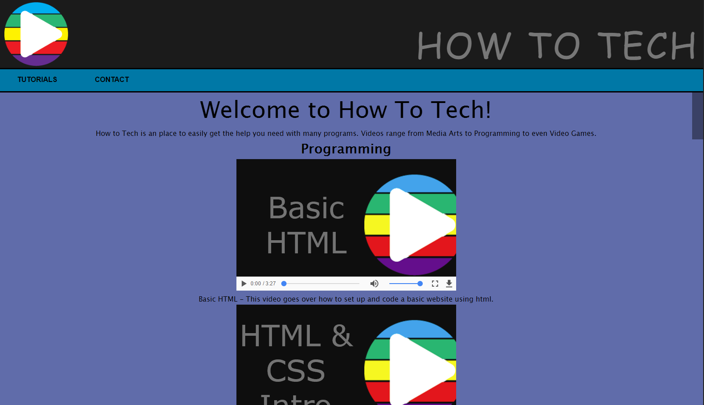

Standard 5.1
Standard 5.1 talks about using multimedia on a website. It talks about embedding media widgets like Google Analytics into a website. It also talks about embedding videos into a website. Web-based videos come in many different formats. Some of these formats include the Youtube Player, MP4 format and many other formats. All of the examples on the right show that I have mastered this standard.
how to tech website

Standard 5.2
Standard 5.2 talks about increasing the popularity of a webste. It talks about keeping visitors coming back to the site and increasing customer retention. It also talks about copyrighting, trademarking, and licensing. All of the examples on the right show that I have mastered this standard.
pokemon clicker game
Standard 5.3
Standard 5.3 talks about the importance of social media. It talks about the pros and cons of blogging and various social media websites. Social media can be an important part of advertising a website. Social media can be used to get people to come and visit your website often and let people know what is going on.
aspen chiropractic website